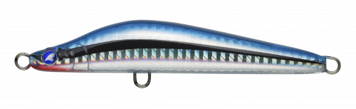
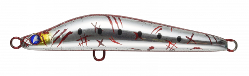
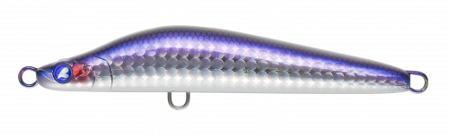
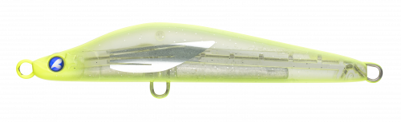

バシュート105
（Bashooot!!! 105）
バシュート105はBlueBlue（ブルーブルー）のジグミノーです。
スズキからマグロまで、カタクチイワシに狂う魚を狙うために開発された「ナブラ打ちの救世主」。標準的なベイトサイズの105mmに、ジグミノーとしては大きな#2フックを前後に付けられ、空気抵抗を抑えた形状で遠くのナブラにも素早く届きます。

画像出典:BlueBlue公式HP
スペック
- メーカー
- BlueBlue（ブルーブルー）
- タイプ
- ジグミノー（シンキング）
- 全長
- 105mm
- 自重
- 37g
- 推奨フック
- 青物：#2／シーバス・ヒラメ：#4
- 推奨リング
- 青物：#5／シーバス・ヒラメ：#3
- アクション
- リトリーブ：ウォブンロール／フォール：水平ローリング
- ターゲット
- 青物・カツオ・シイラ・ヒラメ・シーバス
- 価格
- 1,850円（税別）
▼今すぐチェック

バシュート105の特徴
カタクチイワシサイズで、遠くのナブラに素早く届くジグミノー
-
大型回遊魚にも対応
貫通ワイヤーを採用し、105mmのジグミノーとしては大きな#2フックを前後に付けられます。青物やカツオ、シイラにも安心して挑めます。
-
空気抵抗を抑えた遠投性能
空気抵抗を抑えた形状で、広い範囲を探れるうえ、遠くのナブラにもスピーディーに届けられます。
-
フックサイズでアクションを調整
フックサイズを下げるとアクションがワイドになり、浮き上がりも速くなります。サーフのヒラメやシーバス、磯のヒラスズキまで幅広く使えます。
バシュート105の使い方
基本はただ巻き。ウォブンロールで泳ぐので、ナブラの先に投げて表層〜中層を巻いてきます。
フォール中は水平にローリングしながら落ちるので、巻きの途中で止めてフォールを入れるのも効果的。サーフではボトム付近まで沈めてから巻き始めると、ヒラメも狙えます。
バシュート105の得意な状況
カタクチイワシを追ったナブラが出ているとき。ショアの青物、サーフのヒラメ、磯のヒラスズキ、オフショアのキャスティングまで、カタクチがベイトの状況なら幅広く使えます。
ワンポイント
青物狙いでは#2フック、シーバスやヒラメ狙いでは#4フックと、狙う魚に合わせてフックとリングを替えましょう。
BlueBlueのナブラ打ち用ルアーの使い分け
| モデル | 全長／自重 | 得意な場面 |
|---|---|---|
| バシュート105 | 105mm／37g | ナブラまで遠投して、ただ巻きで探りたいとき（本記事のモデル） |
| ガチペン130 | 130mm／30g | マイクロベイトやベタ凪で、トップで食わせたいとき |
| ガチポップ100 | 100mm／26g | ポッピングで強くアピールしたいとき |
ナブラの状況や魚の活性に合わせて、トップとジグミノーを使い分けましょう。
人気カラー
公式ラインナップから4色を紹介します（カラー名は公式の表記のまま）。

#06 キビナゴキビナゴを意識したナチュラルカラー。キビナゴがベイトのときに。

#08 コテンパンイワシイワシ系のカラー。カタクチやマイワシのナブラに。

#09 カタクチカタクチイワシそのもののナチュラルカラー。バシュートの基本になる色。

#14 レモンフライヤーレモン系の目立つカラー。濁りや曇りの日にアピールしたいときに。
画像出典:BlueBlue公式HP
バシュート105に似ているルアー
-
 ビスタ100S
DUO
詳細はこちら＞
ビスタ100S
DUO
詳細はこちら＞
全長100mm・自重34gのジグミノー。同じクラスで、サーフのヒラメ狙いを中心に使いたいときに。
-
 ザブラ モンスーンブレイカー115
ZIPBAITS
詳細はこちら＞
ザブラ モンスーンブレイカー115
ZIPBAITS
詳細はこちら＞
全長115mm・自重29gのジグミノー。少し長いシルエットで、サワラやサゴシを狙いたいときに。
-
 ソニックブーム SBショット115S
デュエル
詳細はこちら＞
ソニックブーム SBショット115S
デュエル
詳細はこちら＞
全長115mm・自重40gのシンキングペンシル。もっと重さと飛距離が欲しいときに。